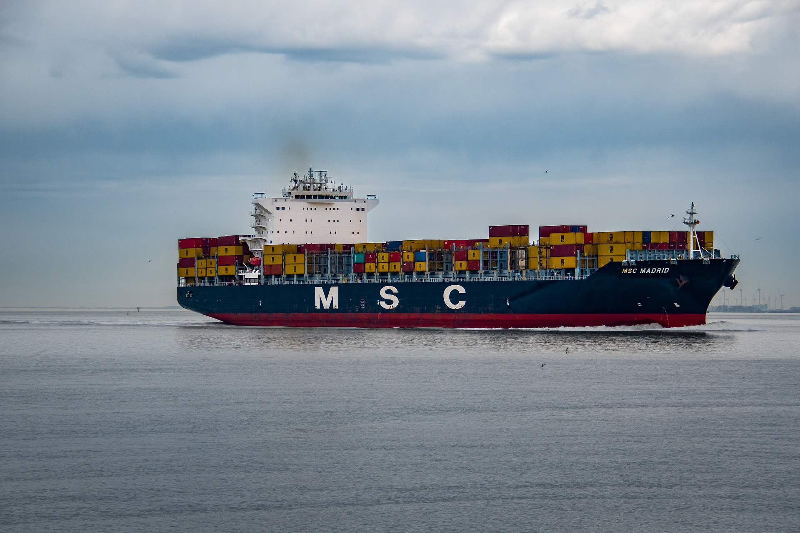
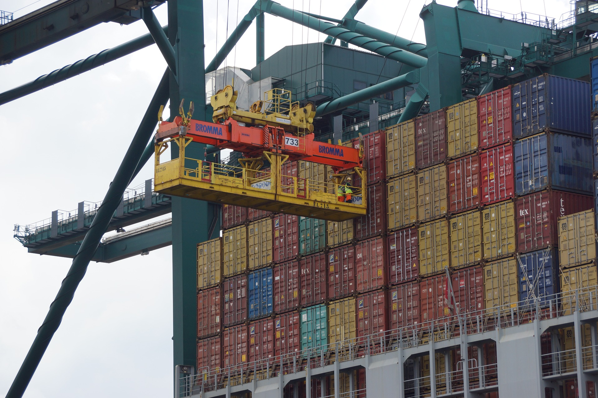

Possuímos parceria com os principais armadores (companhias marítimas), o que nos possibilita realizar o transporte internacional de sua carga em qualquer parte do mundo. Realizamos embarques porto a porto, porta a porta ou multimodal nas principais modalidades dentro do transporte marítimo internacional Full containers (FCL), cargas consolidadas (LCL), cargas de projeto, cargas a granel, cargas Break Bulk e cargas rolantes (RO-RO). No transporte marítimo internacional também transportamos cargas perigosas, cargas perecíveis em containers refrigerados (Reefers), cargas com excesso de peso ou dimensões (carga oversize ou carga superdimensionada) e processos especiais como back-to-back, importações ou exportações temporárias e feiras internacionais.

Fale com o especialista
Solicite um orçamento para frete internacional
Equipe de especialistas treinados para atender e fornecer a melhor solução para você e sua empresa.
Entre em contatoFrete marítimmo
O frete marítimo é uma modalidade crucial para o comércio internacional, permitindo o transporte eficiente e econômico de grandes volumes de mercadorias entre países e continentes.
+ detalhes

Frete Aéreo
O frete aéreo é a solução ideal para transporte rápido e seguro de mercadorias urgentes e de alto valor, garantindo entregas ágeis e confiáveis em qualquer parte do mundo.
+ detalhes

Frete Rodoviário
O frete rodoviário é essencial para a logística interna, proporcionando flexibilidade e eficiência no transporte de mercadorias através de malhas viárias que conectam cidades e regiões de forma direta e acessível.
+ detalhes

Consultoria Logística
A consultoria logística oferece soluções estratégicas personalizadas, otimizando processos de armazenamento, transporte e distribuição para aumentar a eficiência e reduzir custos operacionais das empresas.
+ detalhes